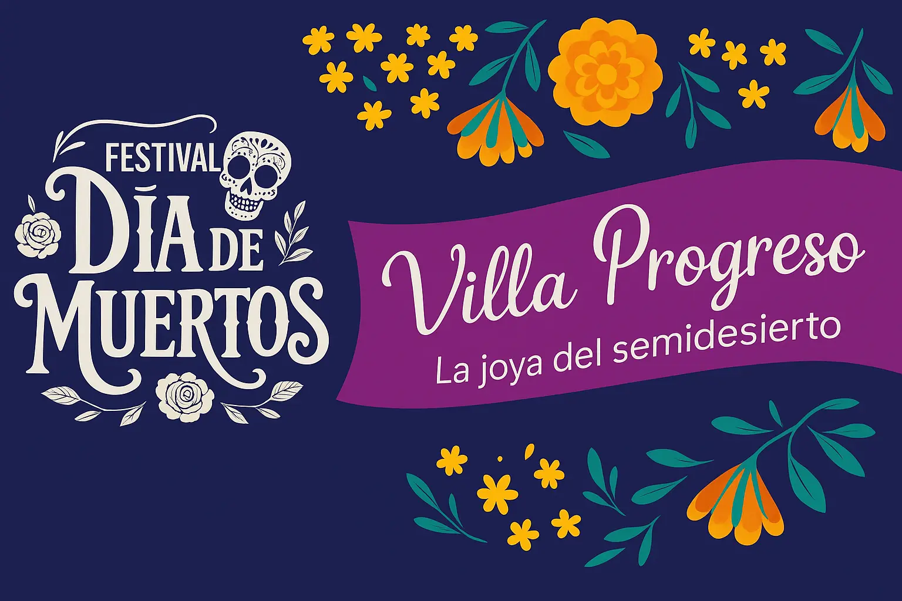

Fiesta conmemorativa
Viernes 31 de Octubre
11:00 AM: Inicio de montaje de altares (Centro)
5:00 PM: Taller de pintar cráneos
6:00 PM: Proyección de película “Coco”
6:00 PM: Recorrido y presentación de altares
7:00 PM: Concurso de catrinas
8:00 PM: Premiación a concurso de altares y catrinas
Sábado 01 de Noviembre
8:30 PM: Inicio de Desfile de Ánimas (Salida del Villa Bar)
9:00 PM: Xantolo
Domingo 02 de Noviembre
8:00 PM: Obra de Teatro “Pa Morir Nacimos”